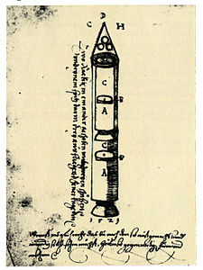

Космические ракеты
Ракеты в Советском Союзе
Существует предположение, что некое подобие ракеты было сконструировано ещё в Древней Греции. Речь идёт о летающем деревянном голубе Архита Тарентского (др.-греч. Ἀρχύτας ὁ Ταραντίνος). Его изобретение упоминается в произведении древнеримского писателя Авла Геллия (лат. Aulus Gellius) «Аттические ночи» (лат. «Noctes Atticae»). В книге говорится, что птица поднималась с помощью разновесов и приводилась в движение дуновением спрятанного и скрытого воздуха. До сих пор не установлено, приводился ли голубь в движение действием воздуха, находящегося у него внутри, или воздуха, который дул на него снаружи. Остаётся неясным, как Архит мог получить сжатый воздух внутри голубя. В античной традиции пневматики нет аналогов такого использования сжатого воздуха[1].
Фейерверки и зажигательные ракеты производились в России начиная с XVII века